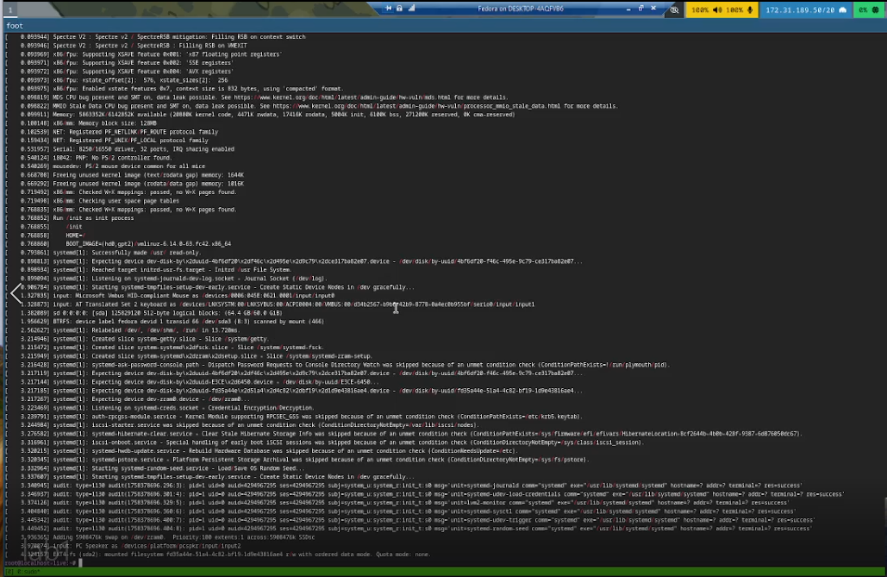
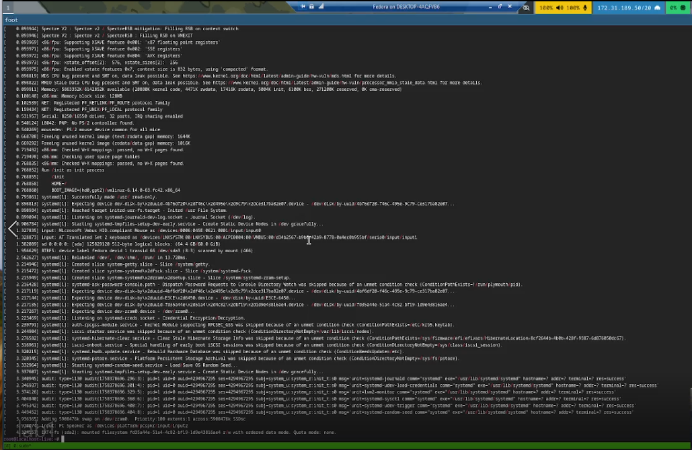

Лабораторная работа №1
Настройка современного окружения разработки
1 Цель работы
Изучить процесс установки операционной системы Linux (Fedora) в виртуальной машине, получить практические навыки работы с системой, освоить базовые команды и принципы администрирования пользователей.
2 Задание
- Создать виртуальную машину для установки Linux
- Установить операционную систему Fedora Linux
- Создать учетную запись пользователя
- Настроить права пользователя
- Настроить клавиатуру для поддержки английской и русской раскладок
- Отключить SELinux для упрощения работы с системой
- Изучить основные команды поиска и фильтрации текста
- Выполнить обновление системы
3 Теоретическое введение
Операционная система Linux является одной из наиболее популярных систем с открытым исходным кодом. Fedora представляет собой дистрибутив Linux, ориентированный на новейшие технологии и разработчиков.
Виртуализация позволяет запускать операционные системы в изолированной среде на одном физическом компьютере. VirtualBox и Hyper-V являются популярными средствами виртуализации.
Основные команды Linux: - grep - поиск текста по шаблону - sudo - выполнение команд с правами суперпользователя - dnf - менеджер пакетов в Fedora - usermod - управление учетными записями пользователей
4 Выполнение лабораторной работы
4.1 Создание виртуальной машины
Для выполнения лабораторной работы была создана виртуальная машина в Hyper-V. На рисунке Рисунок 1 показано окно настройки виртуальной машины с именем “Fedora”.

4.2 Установка операционной системы
Установка Fedora была выполнена с загрузочного носителя. На рисунке Рисунок 2 показан процесс загрузки live-системы перед началом установки.

Процесс установки показан на рисунке Рисунок 3, где видно окно программы установки Anaconda с прогрессом установки 66%.

4.3 Создание учетной записи пользователя
После успешной установки была создана учетная запись пользователя “mohammedmusa”. На рисунке Рисунок 4 показан экран входа в систему с созданной учетной записью.

4.4 Настройка прав пользователя
Для предоставления административных прав пользователю были выполнены команды добавления в группу wheel и установки полного имени:
sudo usermod -aG wheel ceazer
sudo hostnamectl set-hostname MohammedMusaРезультат выполнения команд показан на рисунке Рисунок 5.

4.5 Настройка клавиатуры
Была выполнена настройка клавиатуры для поддержки английской и русской раскладок. Настройки клавиатуры показаны на рисунке Рисунок 6.
Для настройки клавиатуры были выполнены следующие действия:
# Проверка текущих настроек клавиатуры
localectl status
# Установка английской и русской раскладок
sudo localectl set-keymap --no-convert us,ru
# Установка локали
sudo localectl set-locale LANG=ru_RU.UTF-8
# Проверка изменений
localectl status4.6 Отключение SELinux
Было выполнено отключение SELinux для упрощения работы с системой. Конфигурация SELinux показана на рисунке Рисунок 7.
Для отключения SELinux были выполнены следующие команды:
# Проверка текущего статуса SELinux
sestatus
# Отключение SELinux (временное)
sudo setenforce 0
# Отключение SELinux (постоянное)
sudo sed -i 's/SELINUX=enforcing/SELINUX=disabled/' /etc/selinux/config
# Перезагрузка для применения изменений
sudo rebootПосле перезагрузки SELinux был полностью отключен, что подтверждается командой sestatus.
4.7 Работа с командой grep (Задания)
Были изучены возможности команды grep для поиска информации в системных логах. На рисунке ?@fig-grep показан результат выполнения команд:
dmesg | grep "Linux version"
dmesg | grep -i "Mhz proccesor"
dmesg | grep -i "CPU0"
dmesg | grep -i "memory" | head -n 1
dmesg | grep -i "hypervisor detected"
dmesg | grep -i "Mhz proccesor"
dmesg | grep -i "root files"  ## Обновление системы
 ## Обновление системы
Было выполнено обновление системных пакетов с помощью команды dnf update. Процесс обновления показан на рисунке Рисунок 8.

5 Выводы
В ходе лабораторной работы были успешно выполнены следующие задачи:
- ✅ Создана виртуальная машина в Hyper-V
- ✅ Установлена операционная система Fedora Linux
- ✅ Создана и настроена учетная запись пользователя
- ✅ Настроены права администратора для пользователя
- ✅ Настроена клавиатура для поддержки английской и русской раскладок
- ✅ Отключен SELinux для упрощения работы с системой
- ✅ Изучены и применены команды поиска текста (grep)
- ✅ Выполнено обновление системы
Получены практические навыки работы с операционной системой Linux, включая установку, настройку пользователей, конфигурацию клавиатуры и SELinux, а также выполнение системных команд. Освоены основы администрирования пользователей и работы с системными логами.
Список литературы
- Fedora Documentation: https://docs.fedoraproject.org/
- Linux Command Line Basics: https://ubuntu.com/tutorials/command-line-for-beginners